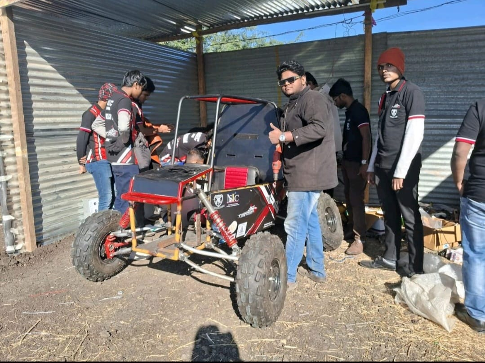

🚙 SAE HBAJA India – Manufacturing and Design Subsystem
Role: Team Lead – Design Subsystem | Field: All-Terrain Vehicle Engineering
🧭 Project Objective
Spearheaded the complete design and development of a high-performance All-Terrain Vehicle (ATV) for the SAE BAJA India challenge, focused on rugged performance, reliability, and manufacturability. As Team Lead, I oversaw the end-to-end mechanical development cycle—from design conceptualization to manufacturing execution and final review.
🛠️ Design Engineering Contributions
- Directed component-level and subsystem-level design using SolidWorks and CATIA V5
- Modeled chassis components, suspension geometry, steering knuckle assemblies, and driver ergonomics
- Performed structural FEA simulations for impact zones and suspension mounts
- Incorporated ergonomics, weight distribution, and serviceability criteria during modeling
🏭 Manufacturing Supervision
- Supervised CNC machining, lathe operations, MIG welding, and fit-up trials
- Validated GD&T-based tolerances through caliper and gauge inspections 
- Ensured design intent alignment during fabrication, using jigs and fixtures
- Coordinated cross-functional efforts between design, fabrication, and testing teams
📐 Technical Highlights
- Developed 2D drawing packages with detailed annotations, BOMs, and tolerance callouts
- Applied DFMA principles for reducing material waste and optimizing weld paths
- Achieved weight reduction without compromising strength by using hollow section geometry and gusset reinforcements
🎯 Recognition & Outcome
The project earned notable recognition from SAE BAJA India for its innovative approach to design optimization and manufacturing execution. Our ATV prototype was shortlisted for future incubation and commercialization, marking a major milestone in our engineering journey.
📈 Skills & Learning
- Leadership and strategic planning for multidisciplinary engineering teams
- Expertise in CAD, tolerance design, and fabrication practices
- Understanding of competitive vehicle development for rugged environments
- Preparedness for roles in automotive design, race engineering, and product development